In 2024, we are going on a long trip to the land down under, New Zealand and Australia. The Australia bit will be a bit of a taster as Australia on its own is vast, but we get to spend most of our time where we want to be - so I am excited to (finally!) be doing this!
As for previous eBooks, this eBook is divided into 3 main sections, namely:
If I think of any other stuff I'll put it into appendices at the end. So, without further ado, let's crack on!
Well, before we start our trip, there are a few things to think about and do. As normal, I have split these up as follows:
I have also included as an Appendix what I envisage packing for the trip (excluding clothing - I am sure you can make up your own minds about clothing!).
Our holiday starts in early February, in Christchurch, New Zealand. We then travel around New Zealand for about 4 weeks, then catching a flight from Auckland to Sydney and starting our 2–week stint in Australia, visiting Sydney and bits of the Queensland coast. We end in Cairns for our flight to Singapore where we stay for 2 nights and then fly home from Singapore via Sweden in late March 2024.
This is a good time to visit as we avoid the really hot summer in Australia, as well as the Christmas and Australia Day holidays in January. We fly out of the UK on Monday 5th February and return on Monday 25th March, 2024.
The weather in New Zealand for the time of our trip is very similar to UK late summer, early autumn weather – quite cool with some rainfall. Australia in early March will be a little warmer and Singapore is likely to be the warmnest. So, take decent overnight gear and a light waterproof for showers is my best advice. Layers will be the order of the day.
What to Pack: You'll want to dress in layers, as well as carry a light jacket and scarf. In early autumn, a heavier coat will still be necessary for some parts of the country.
New Zealand is a country of approx. 5.1 million people; Australia has a population of approx. 25.7 million people. New Zealand is approx. 268 thousand square kilometres in size; Australia is 7.7 million square kilometres. By comparison, the UK has a population of approaching 70 million people crammed into nearly 250,000 square kilometres of land mass (and we only have 136 permanently inhabited islands).
Do check with your GP about what innoculations they advise for your personal circumstances for this trip. They will normally check for whether you are up to date with vaccines for cholera, typhoid, Hepatitis A and Tetanus.
Make sure and get them to bring your vaccination record card up to date and store it somewhere safe. If available, download an electronic copy of your vaccination record card to your phone.
Hampton GP surgery also gave me two web sites to check:
Do check with your GP about whether you can take with you any "normal" tablets you take e.g. my metformin, headache tablets, joint pain tablets etc. If necessary, ask your GP for a note confirming the prescription medicines you are taking.
Your passport should be valid for the proposed duration of your stay. No additional period of validity beyond this is required. There should be at least 2 completely blank pages left in your passport as well.
New Zealand is 12 hours ahead of GMT. However, daylight saving is in place in New Zealand. In January, February and March the time difference between New Zealand and the UK is 13 hours. In April the time difference is 12 hours.
Sydney and the Queensland coast are 11 hours ahead of GMT.
Singapore is 8 hours ahead of GMT.
| Air Journey | Distance (miles) |
|---|---|
|
Birmingham [1] to Christchurch via Singapore 5th February Flight SQ2149 from Birmingham to Frankfurt Depart: 0555, Arrive: 0830 on 5th February Flight SQ025 from Frankfurt to Singapore Depart: 1135, Arrive: 0655 (6th February) Flight SQ297 from Singapore to Christchurch Depart: 1950, Arrive: 1040 (7th February) |
12198, total flight time: 22 hours 30 minutes |
|
Auckland to Sydney 7th March Flight QF142 from Auckland to Sydney Depart: 0800, Arrive: 0935 on 7th March |
1345, total flight time: 3 hours 30 minutes |
|
Sydney to Melbourne 11th March Flight JQ521 from Sydney to Melbourne Depart: 1355, Arrive: 1525 on 11th March |
545, total flight time: 1 hour 23 minutes |
|
Melbourne to Brisbane 14th March Flight QF142 from Auckland to Sydney Depart: 1610, Arrive: 1525 on 14th March |
854, total flight time: 2 hours 12 minutes |
|
Brisbane to Proserpine 17th March Flight QF5834 from Brisbane to Proserpine Depart: 1205, Arrive: 1345 on 17th March |
684, total flight time: 1 hours 37 minutes |
| Cairns to Singapore 22nd March Flight SQ204 from Cairns to Singapore Depart: 1810, Arrive: 2305 |
3112, total flight time: 7 hours 30 minutes |
| Singapore to Sweden 24th March Flight SQ324 from Singapore to Sweden Depart: 2355, Arrive: 0645 |
6535, total flight time: 13 hours 20 minutes |
| Sweden to Birmingham 25th March Flight KL1425 from Singapore to Sweden Depart: 1235, Arrive: 1250 |
276, total flight time: 1 hour 10 minutes |
| TOTAL air miles | 25549 |
| TOTAL flying time | 55 hours |
N.B.
The start hotel for this trip is the Crowne Plaza Hotel in Christchurch for 3 nights, room only.
Our accommodation on the way back in Singapore is the Paradox Merchant Court for 2 nights, premier room including breakfast.
Lesley and I will each have a "travel pack" with printed copies of our travel documentation plus other stuff to do with the trip. We will also have our New Zealand and Australian currency split up between us.
New Zealand, Australia and Singapore each have their own dollar ($) as their unit of currency.
Most places will take credit card payments but it is always useful to have some cash on you. We are taking a small amount of cash for each country with us. We will also have a small amount of cash in sterling with us for emergencies.
Currency exchange rates are always changing but are 1.86 Australian dollars to the pound and just over 1.98 New Zealand dollars to the pound. We have got 1.58 Singapore dollars to the pound just so we are aware comparatively how much we are spending.
Not really of much relevance to us as we are not buying any alcohol duty free on the way out. However, we may buy some on the way back.
On the return to the UK, these are selected allowances:
In New Zealand and Australia, most hotels, coffee shops and restaurants nowadays offer free internet access. Access is usually provided as a wireless network or wired internet via LAN cable.
We think we will need to use our phones in New Zealand and Australia, other than via wifi, for things like maps (we have no sat nav in the hire car). EE offer supplements that you can buy to get you data usage there. EE offer a 30 day 500MB data allowance for £25.00. For 3, I have changed my contract to allow up to 120GB data roaming per month.
We may or may not be able to print our boarding cards for our internal and return flight to the UK when we are away. As for some previous holidays we may be able to download the airline app and just have a downloadable boarding pass. I have downloaded the Singapore Airlines, Quantas, KLM apps on my iPhone and will let you know how that works.
New Zealand uses Type I plugs. This is the same as in Australia and the Pacific Islands. Type I plugs have three flat pins, with two angled to form an inverted ‘v’ at the top and one running straight down underneath.
The voltage in New Zealand is 230/240 volts (50Hz).Electricity supply in Singapore is 230 volts AC, 50Hz. The power plugs used in Singapore are of the three-pin, square-shaped type. The same as in the UK.
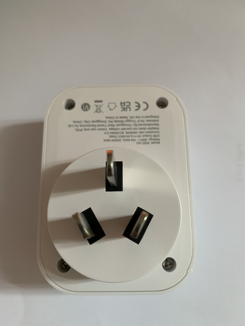
Our existing existing blue travel adaptors MAY be OK in some places.
Flight departure time from Birmingham Airport is approx. 0555 so we will probably get to the airport between 0200 and 0300 to check in, allowing extra time for revised security arrangements.
N.B. The monorail from Bham International closes between 0030 and 0330 so we will need to go direct to the airport.
There is a layover of two and a half hours in Frankfurt but our luggage should be transferred across for us. Don't forget to watch your data usage in Frankfurt (and all airports)
We depart from Frankfurt at 1140 and arrive in Singapore at 0650 on 6th February. We have a 13 hour layover in Singapore so we will have to find something to do. We depart Singapore at 1950 and arrive in Christchurch at 1040 on 7th February.
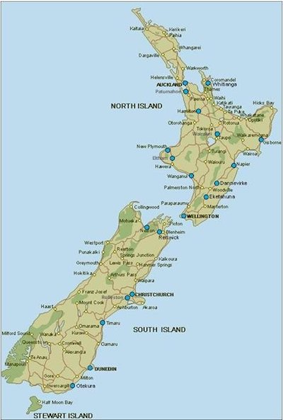
Arrive at Christchurch airport at about 10:40. We could then take the number 8 bus to the centre of Christchurch. From there it is a 10-15 minute walk to the Crowne Plaza hotel. Room only - no meals included. We stay here until we check out on the morning of 10 February.
We will leave our bags in our room or a storage room at the hotel when we first arrive. Then we need to shop! We will need to buy some food for breakfasts and lunches for the next few days. We will also need some sort of cool box to keep stuff in for the next few days.
Meals included: NONE
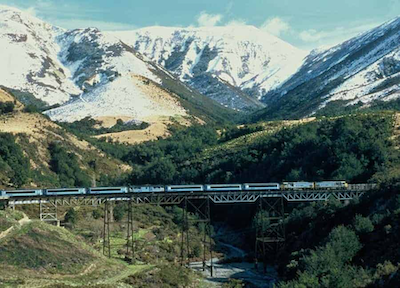
Today is our (booked) Tranz Alpine Express round-trip day! We must be at the station for 0840 - train leaves at 0850, so may well be a taxi. We stop in Greymouth for about 2 hours. The return journey will take pretty much all day so we will need to take food and drink with us. We aim to be back at the hotel at about 1900.
No driving today!
Lots of other things to do in Christchurch today:
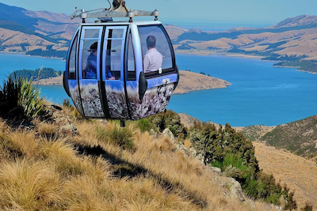
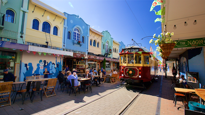
Today is meant to be relaxing so we can do as much or as little as we want. The driving starts tomorrow!
Checkout from hotel and pick up car. We've ordered a Kia Sportage which should have plenty of room – and its an automatic! Drive to Oamaru, stopping off at anything interesting on the way for lunch. Journey time to Oamaru is 2-3 hours approx. Check in at our accommodation – AirBnB,27 Douglas Terrace, Oamaru. We are here for 2 nights - no meals included.
In the afternoon maybe do some exploring of Oamaru, perhaps see the penguins in the early evening?
At leisure, stroll around - see SteamPunk HQ and penguins if we havent already seen them the previous evening. Various museums have been recommended.
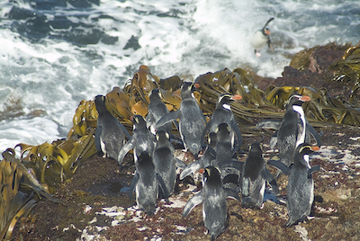
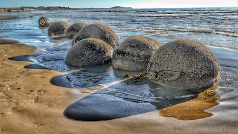
The drive to Dunedin takes about 1 hour 25 minutes. May stop off at the Moeraki Boulders (above) on the way. We are at the Scenic Hotel Southern Cross, Dunedin for 2 nights. No meals included. Parking close by but not on site.
Things to do in Dunedin:
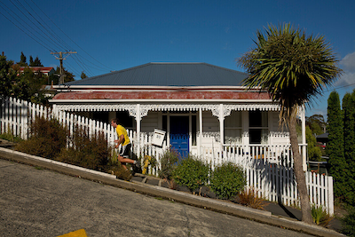
Maybe drive out to the Otago Peninsula, or stroll around Dunedin centre?
Longish drive today – almost 3.5 hours. 2 nights in Te Anau at Fjordland Great Views Holiday Park. No meals included.
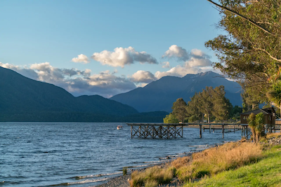
Things to do in Te Anau:
Full day trip to Milford Sound plus water cruise (booked, incl. pickup). Take waterproofs - on deck can get very wet apparently!
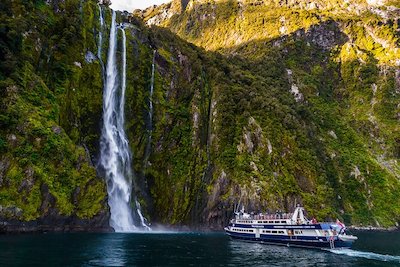
2 hour journey to Queenstown. 3 nights in Queenstown, Pinewood Lodge Hotel, Queenstown. No meals included.
Explore Queenstown in the afternoon. Maybe boat trip on the lake? Recommenmdation from Emily to try Fergburger at some point.
Gondola - Robs peak. Trip to Cromwell and Bannockburn and wine country – pinot noir is an Otago speciality. Try Mt Difficulty winery.
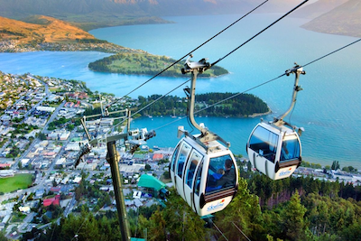
Day trips around Queenstown e.g. Wanaka and cultural stuff around there.
Checkout from Queenstown. N.B. Have lake breakfast view and send photo to family.
Only one night at Haast. No sight seeing here. Early morning checkout, after the included breakfast
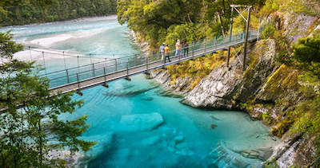
Picturesque drive to Hokitika. Visit Franz Josef and/or Fox glacier on way.
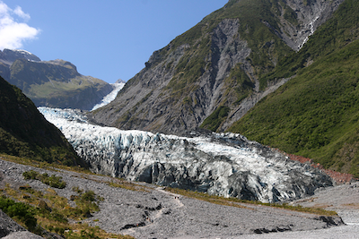
Based at Stumpers Hotel, Hokitika for 2 nights – no meals included.
Hokitika sightseeing. Hokitika gorge and tree top walkway.
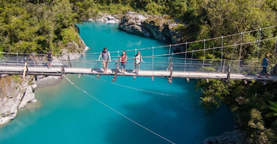
Hokitika sightseeing. Hokitika gorge and tree top walkway.
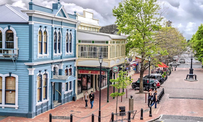
Early start out from Hokitika, stopping at Pancake Rocks before turning inland towards Nelson. Todays drive is long - nearly 4 and a half hours. BEWARE: around Murhcison and Nelson Lakes is sand-fly territory: kepp all windows closed, turn off air con etc. until we are past it.
Things to do around Nelson - possibilities
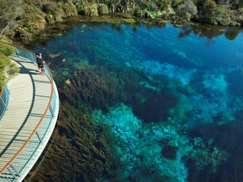
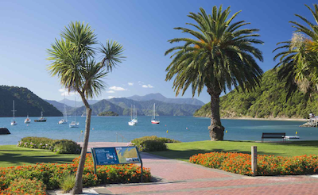
Ferry from Picton is booked for 1415 so we need to be there by 1345. We have been told that Picton is quite pretty so get there in time for a nice stroll around before queuing for the ferry. The ferry takes 3 hours to cross to Wellington. We are staying at the Naumi Hotel, Wellngton for 2 nights. No meals included.
Sightseeing around Wellington – potentials:
4-hour drive to Napier. We are staying at the Pebble Beach Motor Inn, Napier for 2 nights. No meals included.
Day around Napier. Maybe visit the Art Deco museum? Or do a wine trip out from Napier.
Drive time today is about 2 hours. We have a 2 night stay at the Ashbrook Hotel, Taupo. No meals included.
Day around Taupo.
Drive time today is about 2.5 hours. Maybe visit the Huka Falls on the way to Rotorua? We have a 2 night stay at the Sport of Kings Motel, Rotorua. No meals included.
Might do one of the tours in the afternoon today (see tomorrow list)?
Things to do around Rotorua:
Leave Rotorua early and travel to Hobbiton. We have a tour booked for 1050 – tours last 90 minutes. After the tour we will travel to Kopu, near Thames, for one night in The Coromandsel. We are staying at the Thorold Country House, Kopu for 1 night. Breakfast included.
Could do early start trip to Hot Water Beach and Cathedral Cove. Then travel to Auckland. We have a 2 night stay at the Braemar on Parliament Street, Auckland. Breakfast included.
Return car to Auckland airport. Rest of the day at leisure and packing for flight to Sydney tomorrow. No fixed plans in Auckland as yet.
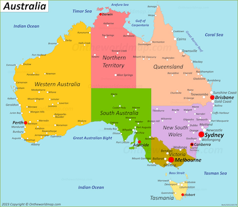
Flight from Auckland to Sydney is booked for 0800 so we need to be at the airport by 0600. We arrive in Sydney at 0935.
Accommodation in Sydney for 4 nights is Unit 7 / 73 Windmill St, Millers Point, NSW 2000. It is a whole apartment (AirBnB), down quite near the opera house, bridge and The Rocks. No meals included.
Relocate to Melbourne for 3 nights.
Relocate to Brisbane for 3 nights.
Relocate to Proserpine for 2 nights.
Day trip to the Whitsunday Islands.
We are booked for 3 nights at the Pullman Cairns International hotel. No meals inlcuded but great review of ther buffet breakfast (39 Aus $ each). Pay at the hotel.
SkyRail to Kuranda trip - gondola both ways. Includes oick-up from across the road from hotel.Paid for. Railway out of action at the moment.
Free day around Cairns. Maybe visit the Great Barrier Reef? Leave luggage in hotel store room?
Leave Cairns at 1810 on Singapore Airlines flight to Singapore. Arrive in Singapore at 2305. We are staying at the Parc Sovereign Hotel, Albert Street, Singapore for 2 nights. Breakfast included.
Day around Singapore after breakfast. Maybe visit the Gardens by the Bay? Get a Singapore sling at Raffles?
Late departure (2355) from Singapore to Sweden. Arrive in Sweden at 0645 on 25th March.
Our onward flight to Birmingham is at 1235 after a 4 hour layover in Sweden. Should arrive back in Birmingham for 12:50 on 25th March – worn out I bet!
For what it's worth, my personal holiday essentials list is included below. Adapt for your own needs, of course!
N.B. Blood group added in pre New Zealand and Australia trip
| Name on Passport | Passport No. | Expiry Date | Blood Group |
|---|---|---|---|
| John Brinley Cable | 534663386 | 1 May 2026 | AB+ |
| Lesley Anne Cable | 556517863 | 18 February 2029 | O+ |
Don't forget to weigh case – safe maximum is 20KG. Camera (in backpack) is hand luggage
Note for neighbours
N.B.
* optional – depends on the holiday
** may purchase in Duty Free at airport
*? may be packed with family toiletry bag